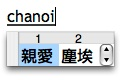
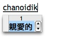

Chinese input methods on Mac OS X, Cantonese phonetic input methods, and FCIM, my new fast Cantonese input method.
Apple does not provide a Cantonese phonetic input method (IM) as a standard part of Mac OS X. Many Cantonese speakers I know type Chinese using some form of Cangjie or Pinyin. I only write in Chinese occasionally. I’ve always found radical- or stroke-based IMs unusable because one needs to first visualize the ideograms. One, my brain doesn’t work that way. Two, half the time I’ve forgotten how to write them anyway. Pinyin is of course based on Mandarin; my Mandarin is passable for a tourist at best :-).
So a Cantonese phonetic IM is really the only logical choice for me. On Mac OS X one can supply a simple character table to specify a custom IM. So I created one based on an old ones I used for Emacs and that has served as my Chinese IM in the past few years. The problem with this custom IM is that it is just a very rudimentary implementation. You type the romanization of a character, hit space to initiate the “conversion”, then select the character you want by number and arrow keys. There’s no dynamic prompting (so one must always hit a space for each character). There’re no built-in or user-defined word dictionaries. And there’s not even a preferences panel (e.g., the font type and size of the candidate window can’t be changed).
Proponents of non-phonetic IMs will often point to their coding’s uniqueness property as an advantage: that each key sequence uniquely identifies a character. However, that was only relevant back when computers were slow, main memory was small, and IMs could perform no more processing than a simple table lookup. Intrinsically a Cantonese phonetic IM can be very fast if an implementation can eliminate as many of the extra key strokes for candidate selection as possible. Ideally if the IM perfectly “understands” the sentences being typed, the only necessary key strokes are ones corresponding to the characters’ romanization. Of course implementing a system having even close to such ability is a major undertaking (great programming project kids!). See Sunpinyin IM for how a statistical model is used to convert Pinyin into sentences, for example. My IM implementation doesn’t understand sentences but by using a good word dictionary and logically-ordered candidate lists, it is still highly useable.
To this date, I still can’t find a good implementation of a Cantonese phonetic IM for Mac OS X that I actually enjoy using. I should mention the OpenVanilla project which has a nice GUI and brings together a large number of input methods. A custom coding table in XCIN format can be added to OpenVanilla to support Cantonese phonetic input. One can then enable dynamic prompting and associated words (via a supplementary module) to make the IM reasonably usable. However, the associated words feature still requires selections too often and among too many candidates. For a number of reasons, some technical and some not, I decided to start from scratch with a new implementation instead of modifying OpenVanilla to work the way I want.
So, my own Cantonese phonetic IM is called FCIM. FCIM stands for either fast Cantonese IM or Fish Creek IM. Fish Creek runs a few hundred meters behind my backyard. Here’re the system requirements and features of FCIM:
Sounds good? Here’re download links for the binary distributions. Get either of these:
To install, move or copy the application bundle named FCIM into the Input Methods folder in the Library folder in your “home” folder. Log out, then log in again (or restart). Select System Preferences... in the “Apple” menu. Then select International, then the Input Menu tab; scroll to find and enable the FCIM input method. Use the Input menu to switch among different input methods. That’s it.
There really isn’t a lot to explain in terms of how to use FCIM. When it is the active IM, just type in the romanization you’re using. When you type a (multi-character) word, type the romanization for all its characters without spaces or any other keys in between. When the contents of the “conversion buffer” (shown underlined in the text) correspond to any characters or words, a candidate window pops up. Use the number keys to choose a candidate. The space key also chooses the first candidate. Use the arrow keys for scrolling if there’re multiple rows of candidates. Commonly-used punctuation marks such as comma and period will convert immediately to their full-width counterparts. The set of these punctuation marks can be customized as described below.
I distribute FCIM under a license (see the file “• License”) that permits research, educational, and non-commercial use, but prohibits redistribution in any form. I do this because I’ve had problems in the past with people taking credit for code I've written and even downright misrepresentation and plagiarism. FCIM is provide “as is”, which means that you use it at your own risk and I’m not able to provide a lot of technical support for it. Thus if you’re a Mac novice, you probably shouldn’t use it.
With that in mind, here is the source distribution of FCIM. The Unihan data file is too big to be included so it must be downloaded from its source. This and other instructions for building FCIM can be found in the file “• Read Me”.
If you can program, you can change FCIM to work the way you want it to (observing the no-redistribution license). Both the FCIM and FCIMDatabaseBuilder projects are only a few hundred lines of code, and should be easy to understand and modify. Otherwise, you can still customize the punctuation, character, and word tables used by FCIM by editing the files FCIMPunctuations.plist, FCIMCharacters.plist, and FCIMPhrases.plist, resp. These files are located in the Contents/Resources folder of the FCIM application bundle, which can be exposed by right-clicking the FCIM icon and choosing “Show Package Contents”. Since the character and word tables are quite large, it’ll be much faster to edit them using a text editor (such as TextEdit) rather than say the “Property List Editor”.
Here’re the limitations of the data tables currently used in FCIM. Since a Cantonese pronunciation table for words isn’t available (very disappointing!), the pronunciations of words are deduced from those of characters. But since some characters have multiple pronuncations, incorrect pronunciations of words are added to the table as well. For example, both “yausui” and “yausuet” selects the word 遊說, but of course only the first pronunciation is correct. Also occurrence frequency data of words isn’t available. So it is estimated from that of characters. This does not always result in good ordering of words in candidate lists.
In any case, that’s how much time I’ve wanted to spend on FCIM for the moment. In its current state, I still enjoy using it much more than any other IMs. Of course since it’s my own code, I can always make improvements to it in the future when necessary or when better data files become available.
Category: Programming